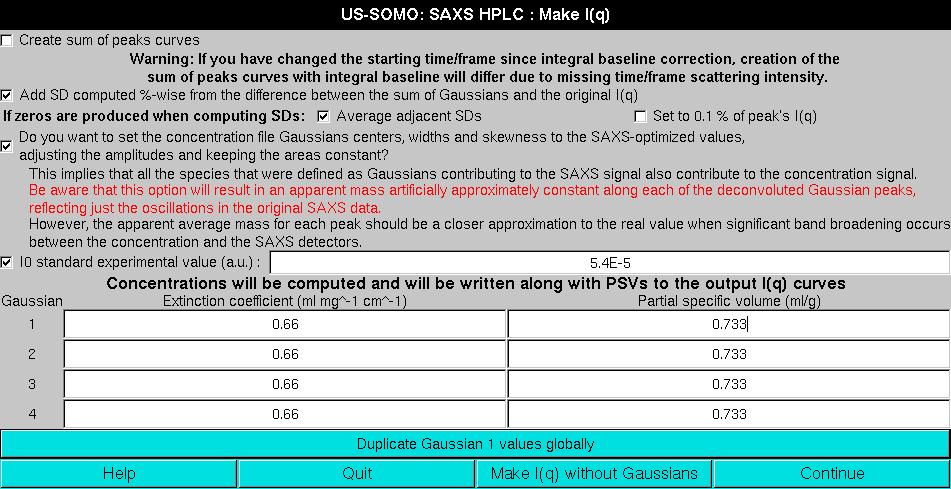

|
Manual
|
SOMO HPLC-SAXS Module Make I(q):
Last updated: April 2016

This pop-up panel will appear when the Make I(q) button is pressed in the main HPLC-SAXS module.
Two main options are present in this panel:
-
The first checkbox Create sum of peak curves allows to check that the individual Gaussian will add back up reconstructing the original I(q) vs. q curves. If checked, their point-wise sum can also be saved, as either sum(I) (reconstructed values) and sum(G) (pure Gaussians) curves. If baselines were established and subtracted, two sums will be produced, without and with baseline back-addition (default: unchecked). If the integral baseline procedure was employed, the back-addition will work properly only if the exact integration limits are still present, e.g., if no cropping operation was performed after the baseline correction. For this reason, a Warning message is printed below this checkbox.
-
Add SD computed %-wise from the difference between the sum of Gaussians and original I(q). In all cases, the original errors associated with each I(q) vs. q point in each frame will assigned to each point in the resulting decomposed I(q) vs. q curves for each frame. Alternatively, if this checkbox is checked a new set of additional errors are computed by point-wise calculating the difference between the sum of the Gaussians and the original, baseline-corrected curve. These additional SDs are then assigned %-wise to each point in the decomposed I(q) vs. q curves, and the new total SDs are calculated at each point by taking the square root of the sum of the square of the original SD plus the square of the Gaussian-derived SD (default: checked).
If in computing the SD of the I(t) data zeros are produced, an additional line will be present in this panel, as shown above.
The extra line reads If zeros are produced when computing SDs: and then offers two options:
-
Average adjacent SDs. An average between the SD of the previous and following datapoints will be made and assigned to the data point in question (default option).
-
Set to 0.1% of peak's I(q). The corresponding I(q) points will have 0.1% SD.
If a concentration chromatogram has been associated to the SAXS data, an additional series of options are presented:
-
The first deals with the new concentration chromatogram re-shaping routine. The question asked is Do you want to set the concentration file Gaussian centers, widths and skewness to the SAXS-optimized values, adjusting the amplitudes and keeping the areas constant?
A series of considerations and warnings follow. The first states that using this procedure implies that all species that were defined as Gaussians contributing to the SAXS signal also contribute to the concentration signal. If this condition is not met, e.g., when a non-absorbing component is present and a spectrophotometric concentration detector is used, appling this correction can lead to serious mistakes.
In red then comes a warning: Be aware that this option will result in an apparent mass artificially approximately constant along each of the deconvoluted Gaussian peaks, reflecting just the oscillations in the original SAXS data.
However, the apparent average mass for each peak should be a closer approximation to the real value when significant band broadening occurs between the concentration and the SAXS detectors.
-
I0 standard experimental value (a.u.):. A normalization factor from a standard sample to be associated with the data can be also entered here. If this checkbox is checked, its value will be associated in each resulting I(q) vs. q curve (default: unchecked).
-
Finally, a calculated concentration can be assigned to each of the resulting I(q) vs. q curves. This is done by entering an extinction coefficient (or a dn/dc) for each Gaussian. In addition, a partial specific volume (psv) value, needed for the computation of the <M>w, <M/L>w/z, and <M/A>w/z by Guinier analysis in the main US-SOMO SAS module, can be also entered here. The module will present as many fields as the Gaussians used to decomposed the data. If all the Gaussians represent a species with the same extinction coefficient (or dn/dc) and psv, the values need to be entered only once in the 1st Gaussian fields, and then they can be propagated to all the other fields by pressing the Duplicate Gaussian 1 values globally button. The concentration value will be used when the Normalize button in the main HPLC-SAXS module is pressed after dataset selection.
It is also possible to back-generate an I(q) vs. q set without using the Gaussian decomposition by pressing the Make I(q) without Gaussians button.
For normal operation, once all fields/checkboxes have been properly set, pressing Continue will return to the main HPLC-SAXS window and start the make I(q) process.
www contact: Emre Brookes
This document is part of the UltraScan Software Documentation
distribution.
Copyright © notice.
The latest version of this document can always be found at:
http://somo.uthscsa.edu
Last modified on April 18, 2016.